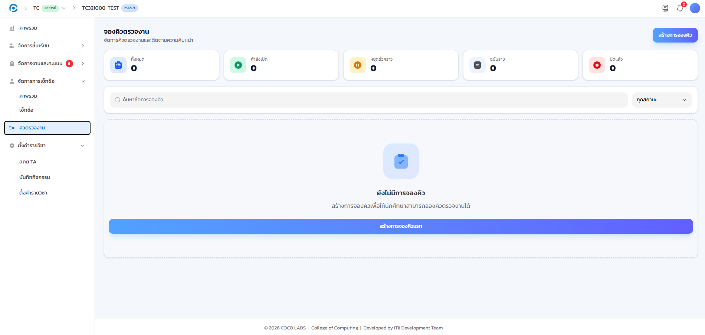
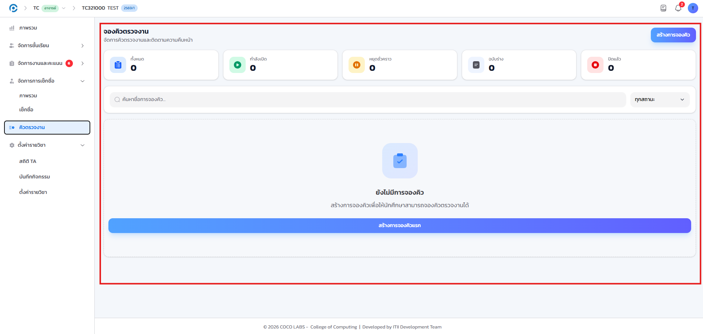
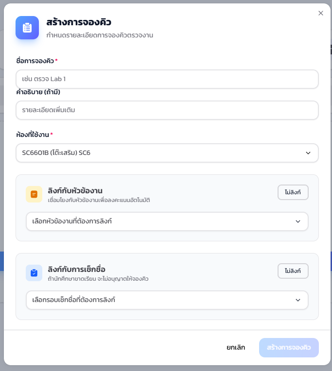
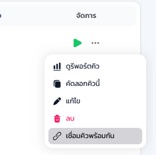
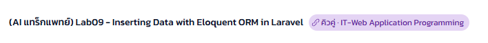
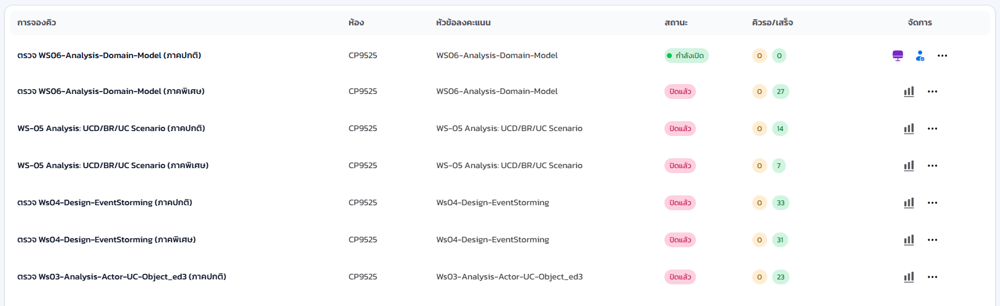
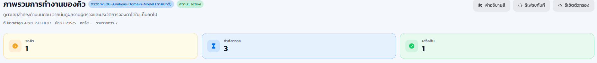
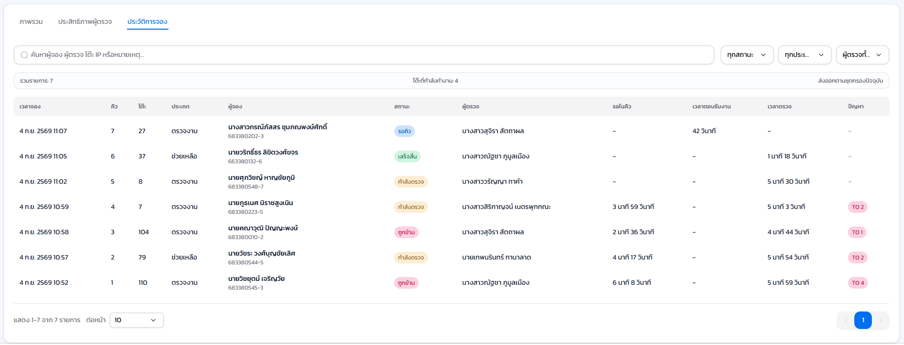
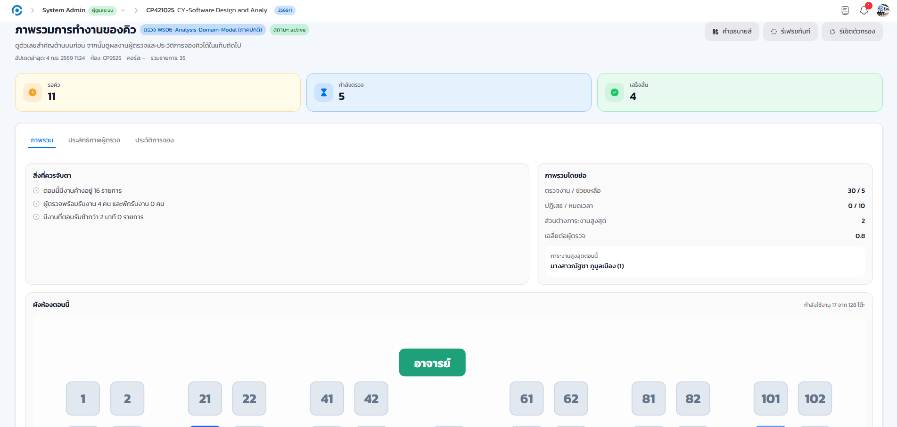
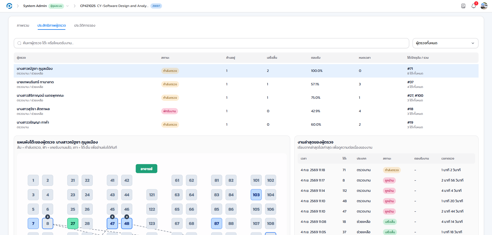

11.1 ภาพรวม#
ระบบคิวช่วยจัดลำดับการตรวจงานและการขอคำปรึกษาในห้องปฏิบัติการให้เป็นระเบียบและยุติธรรม นักศึกษาจองคิวผ่าน QR โค้ด รหัส PIN หรือหมายเลขโต๊ะ ผู้ช่วยสอนเรียกตรวจตามลำดับผ่านหน้าจอผู้ตรวจ (Worker) ทั้งนี้ ระบบยังรองรับการเชื่อมคิวข้ามรายวิชา ทำให้ผู้ช่วยสอนของอีกรายวิชาหนึ่งเข้ามาช่วยรับงานในคิวของท่านได้ด้วย รายละเอียดอยู่ในหัวข้อ 11.4
11.2 เปิดหน้ารายการคิว#
เป้าหมายของขั้นตอนนี้ เข้าสู่หน้าที่รวมรอบคิวตรวจงานทั้งหมดของรายวิชา ซึ่งเป็นจุดเริ่มต้นของทุกการทำงานในบทนี้
- เข้าเมนู คิวตรวจงาน ที่แถบเมนูด้านซ้ายของรายวิชา

- แถบสรุปจำนวนรอบ
- นับจำนวนรอบทั้งหมด ทั้งหมด / กำลังเปิด / หยุดชั่วคราว / ฉบับร่าง / ปิดแล้ว
- แถวรายการคิว
- ชื่อคิว ห้อง หัวข้อที่ลงคะแนน สถานะ และจำนวนคิวรอ/เสร็จ ของแต่ละรอบ

11.3 สร้างการจองคิว#
เป้าหมายของขั้นตอนนี้ กำหนดรายละเอียดของรอบคิวใหม่ ก่อนเปิดให้นักศึกษาจองจริง
- คลิกปุ่ม สร้างการจองคิว ระบบจะเปิดหน้าต่างฟอร์ม
- กรอกรายละเอียดตามหัวข้อด้านล่าง แล้วคลิก สร้างการจองคิว อีกครั้งเพื่อยืนยัน

รอบใหม่ปรากฏบนสุดของตารางรายการคิว พร้อมสถานะเริ่มต้นตามเวลาที่ตั้งไว้
11.4 การเชื่อมคิวพร้อมกันข้ามวิชา (คิวคู่)#
เป้าหมายของขั้นตอนนี้ ให้ผู้ช่วยสอนของอีกรายวิชาหนึ่งช่วยรับงานในคิวของท่านได้ โดยไม่ต้องเพิ่มเป็นสมาชิกของรายวิชาโดยตรง
บนฟอร์มเดียวกับข้อ 11.3 ท่านเปิดสวิตช์ เชื่อมคิวพร้อมกัน แล้วเลือกรอบคิวของอีกรายวิชาที่ต้องการจับคู่ด้วยได้ เหมาะกับกรณีที่ทีมผู้ช่วยสอนของสองรายวิชาต้องการช่วยกันรับงานในช่วงเวลาเดียวกัน
- เปิดสวิตช์ เชื่อมคิวพร้อมกัน ในฟอร์มสร้างหรือแก้ไขรอบคิว
- เลือกรอบคิวของรายวิชาอีกฝั่งที่ต้องการจับคู่ แล้วคลิก บันทึก

รอบคิวทั้งสองฝั่งที่จับคู่กันจะแสดงป้าย คิวคู่ กำกับไว้ เพื่อให้ทราบว่ากำลังทำงานร่วมกับอีกรายวิชาหนึ่งอยู่

ผู้ช่วยสอนของอีกรายวิชาที่ถูกเชื่อมเข้ามาไม่จำเป็นต้องเป็นสมาชิกของรายวิชาท่านโดยตรง ระบบอนุญาตให้รับ ตรวจ หรือข้ามงานจองของอีกฝั่งได้ตามปกติเช่นเดียวกับผู้ช่วยสอนของท่านเอง รายละเอียดสิ่งที่ผู้ช่วยสอนเห็นอยู่ในหัวข้อ 11.7
11.5 ติดตามสถานะระหว่างเปิดคิว#
เป้าหมายของขั้นตอนนี้ ดูสถานะและความคืบหน้าของรอบคิวระหว่างที่เปิดรับอยู่
- ที่แถวของรอบซึ่งมีสถานะ กำลังเปิด คลิกเข้าไปดูรายละเอียด

- แถบสถิติ
- จำนวนรอคิว กำลังตรวจ เสร็จสิ้น และต้องดูแล ของรอบนั้น
- รายการจอง
- รายชื่อนักศึกษาที่จองคิวทั้งหมด พร้อมสถานะปัจจุบันของแต่ละคน


หลังจากสร้างและเปิดคิวแล้ว ท่านสั่งเริ่ม หยุดชั่วคราว หรือปิดคิว รวมถึงปิดรับคิว (cutoff) ได้จากหน้านี้
11.6 มุมมองผู้ช่วยสอนที่หน้าจอผู้ตรวจ (Worker)#
เป้าหมายของขั้นตอนนี้ ทราบภาพรวมของหน้าจอที่ผู้ช่วยสอนใช้เรียกและตรวจงานจริง เพื่อช่วยตอบคำถามหน้างานได้
ผู้ช่วยสอนเข้าทำงานที่หน้าจอผู้ตรวจ (Worker) เพื่อเรียกและตรวจงานตามลำดับคิว รายละเอียดฉบับเต็มอยู่ในบทที่ 16 ในที่นี้ขอสรุปเฉพาะส่วนที่เกี่ยวข้องกับหัวข้อ 11.7


เมื่อเริ่มทำงานครั้งแรก เบราว์เซอร์จะขอสิทธิ์แจ้งเตือน เพื่อแจ้งเมื่อถึงคิวถัดไปแม้สลับไปหน้าต่างอื่น แนะนำให้กด อนุญาต

11.7 งานข้ามวิชาที่หน้าจอผู้ตรวจ (สำหรับคิวคู่)#
เป้าหมายของขั้นตอนนี้ ทำความเข้าใจสิ่งที่ผู้ช่วยสอนเห็น เมื่อได้รับงานจองจากรายวิชาที่ตนไม่ได้เป็นสมาชิกโดยตรง ผ่านการเชื่อมคิวพร้อมกัน
เมื่อรอบคิวของสองรายวิชาถูกเชื่อมกันไว้ตามข้อ 11.4 ผู้ช่วยสอนของฝั่งหนึ่งจะถูกดึงเข้าไปทำงานในรอบคิวของอีกฝั่งโดยอัตโนมัติ ทำให้รับ ตรวจ หรือข้ามงานจองของรายวิชาที่ตนไม่มีสิทธิ์สมาชิกโดยตรงได้ตามปกติ เพื่อไม่ให้สับสนว่างานจองแต่ละรายการเป็นของรายวิชาใด หน้าจอผู้ตรวจจะติดป้ายชื่อรายวิชาต้นทางกำกับไว้ที่งานจองนั้นเสมอ
ภาพชั่วคราว รอถ่ายจริง
หัวข้อการให้คะแนนย่อยของงานจองที่รับข้ามวิชามาจะดึงจากงานมอบหมายต้นทางของรายวิชานั้นโดยตรง ไม่ใช่จากข้อมูลงานมอบหมายของรายวิชาที่ผู้ช่วยสอนสังกัดอยู่ ผู้ช่วยสอนจึงตรวจและให้คะแนนตามเกณฑ์ของรายวิชาต้นทางได้อย่างถูกต้อง แม้ไม่ได้เป็นสมาชิกของรายวิชานั้นโดยตรง
11.8 ดูรายงานการทำงานของคิว#
เป้าหมายของขั้นตอนนี้ ประเมินประสิทธิภาพการทำงานของทีมผู้ช่วยสอนหลังปิดรอบคิว
- คลิกไอคอน สถิติ ที่ท้ายแถวของรอบคิว เพื่อเปิด รายงานการทำงานของคิว
- เลือกแท็บ ภาพรวม ประสิทธิภาพผู้ตรวจ หรือ ประวัติการจอง ตามข้อมูลที่ต้องการดู

แท็บ "ประสิทธิภาพผู้ตรวจ" แสดงจำนวนงานที่ตรวจ เวลาเฉลี่ยต่อรายการ และภาระงานของผู้ช่วยสอนแต่ละคน รวมถึงผู้ช่วยสอนที่ถูกดึงเข้ามาจากรายวิชาที่จับคู่ไว้ตามข้อ 11.4 ด้วย
